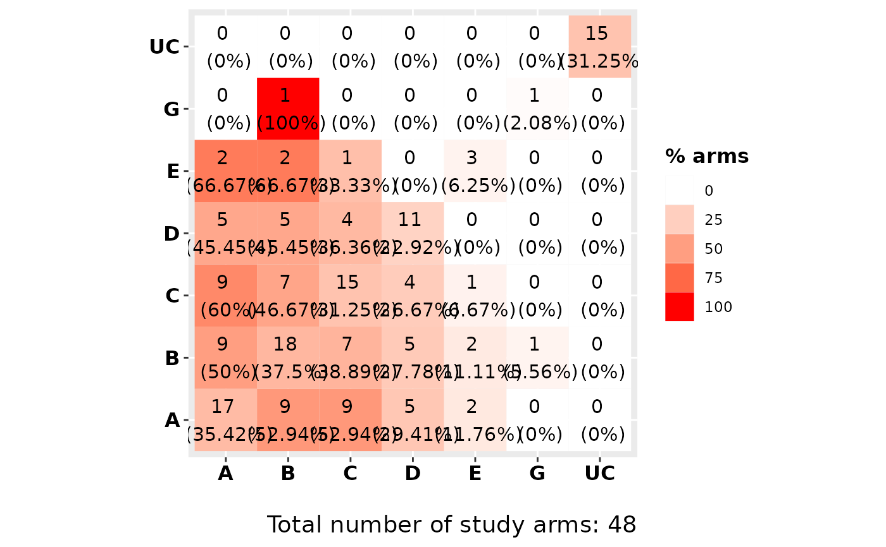

The function performs a descriptive analysis regarding the frequency of the components in the network meta-analysis model.
Arguments
- model
An object of class
netmeta.- sep
A single character that defines the separator between interventions components.
- heatmap
logical. IfTRUEa heat matrix of the component's frequency is plotted.
Value
A list containing three items
- crosstable
A cross-table containing the frequency of the components. Each cell represents the number of arms where the corresponding component combination was observed.
- frequency
A
data.framethat contains the component's frequency. ColumnsComponentdenotes the name of each componentFrequencydenotes the number of arms where the component was observedAdenotes the number of studies in which the corresponding component was included in all armsA_percentdenotes the percentage of studies in which the corresponding component was included in all armsBdenotes the number of studies in which the corresponding component was included in at least one armB_percentdenotes the percentage of studies in which the corresponding component was included in at least one armCdenotes the number of studies in which the corresponding component was not included in any armC_percentdenotes the percentage of studies in which the corresponding component was not included in any armA.Bdenotes the ratio of columnsAandB.
- heatmat
An object of class
ggplotthat visualizes itemcrosstable. Diagonal elements refer to the components and in parentheses the proportion of study arms including that component is provided, while off-diagonal elements to the frequency of component’s combinations and in parentheses the proportion of study arms with both components out of those study arms that have the component in the column is provided. Also, the intensity of the color is proportional to the frequency of the component combination.
Note
The function can be applied only in network meta-analysis models that contain multi-component interventions.
Examples
data(MACE)
NMAdata <- netmeta::pairwise(
studlab = Study, treat = list(treat1, treat2, treat3, treat4),
n = list(n1, n2, n3, n4), event = list(event1, event2, event3, event4), data = MACE, sm = "OR"
)
net <- netmeta::netmeta(
TE = TE, seTE = seTE, studlab = studlab, treat1 = treat1,
treat2 = treat2, data = NMAdata, ref = "UC"
)
compdesc(model = net)
#> $crosstable
#> A B C D G E UC
#> A 17 9 9 5 0 2 0
#> B 9 18 7 5 1 2 0
#> C 9 7 15 4 0 1 0
#> D 5 5 4 11 0 0 0
#> G 0 1 0 0 1 0 0
#> E 2 2 1 0 0 3 0
#> UC 0 0 0 0 0 0 15
#>
#> $frequency
#> Component Frequency A A_percent B B_percent C C_percent A.B
#> A A 17 2 0.09090909 11 0.50000000 11 0.5000000 0.1818182
#> B B 18 3 0.13636364 13 0.59090909 9 0.4090909 0.2307692
#> C C 15 2 0.09090909 11 0.50000000 11 0.5000000 0.1818182
#> D D 11 1 0.04545455 9 0.40909091 13 0.5909091 0.1111111
#> G G 1 0 0.00000000 1 0.04545455 21 0.9545455 0.0000000
#> E E 3 0 0.00000000 3 0.13636364 19 0.8636364 0.0000000
#> UC UC 15 0 0.00000000 15 0.68181818 7 0.3181818 0.0000000
#>
#> $heatmat

#>